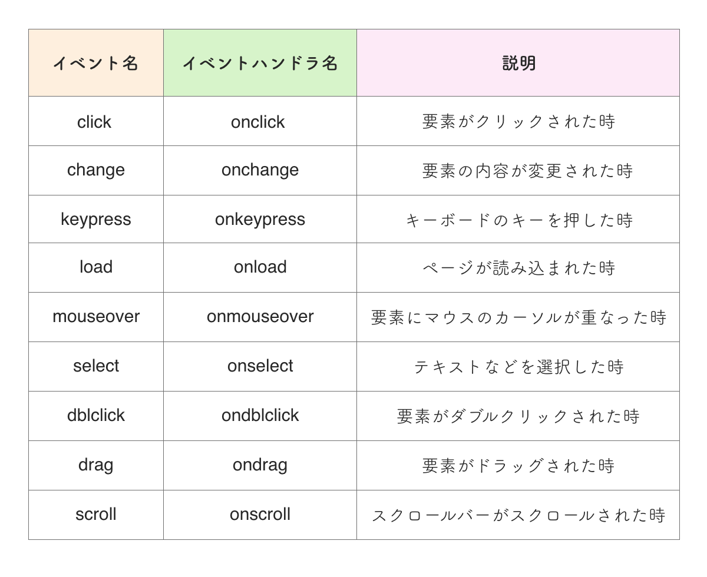
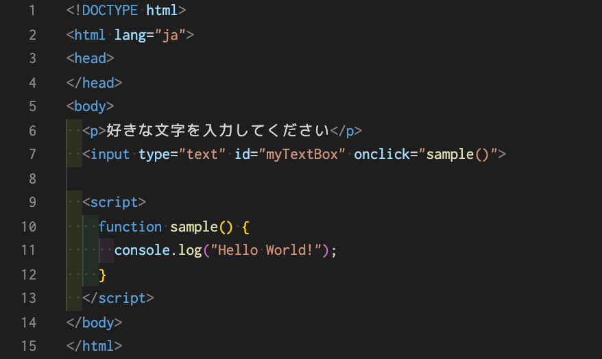
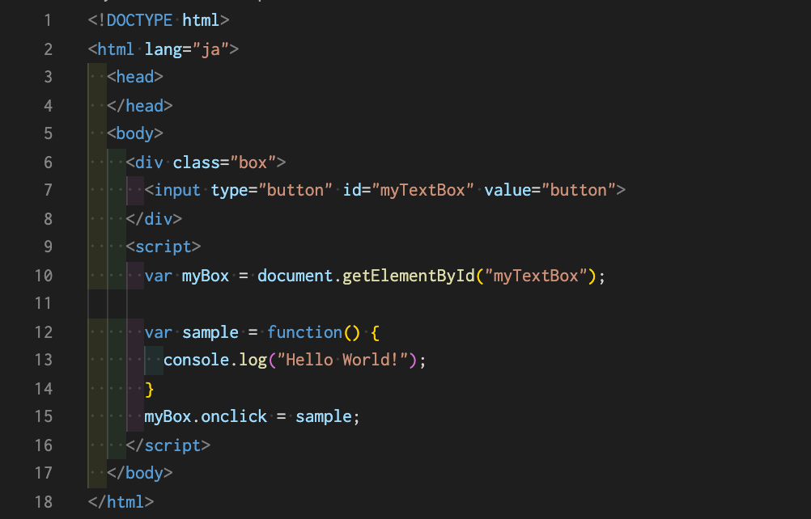
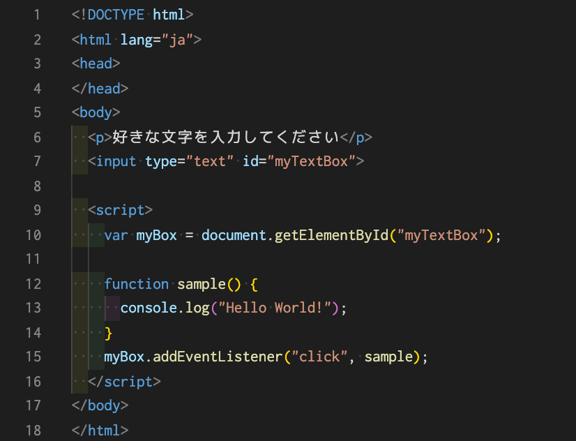

イベントハンドラの種類を一覧にして一部紹介しておきます。

イベントハンドラを登録する方法はひとつではありません。 3種類ほど紹介していきたいと思います。
まずHTMLのイベント属性を使用してイベント処理を行う方法です。 同じように記述してみてください。
上のコードでは、まず簡単なテキストボックスを作成しました。
そして、inputタグのコードにonclick属性を追加しました。 この場合、onclickイベントハンドラを発動させるために、onclick属性の値に関数sampleを指定しました。 関数sampleは"Hello world!"とコンソールに表示させるシンプルな関数です。 この処理により、テキストボックスをクリックした際にコンソールに"Hello world!"と表示されることが分かるかと思います。
次に紹介するのは、イベントプロパティを使用する方法です。
上のコードでは、ドット（.）を使用し、onclickプロパティの値として指定したい関数を代入します。（15行目） getElementById関数で任意の要素を取り出して変数myboxに格納しました。 そして、その要素のonclickプロパティの値に関数を設定しています。 指定した関数はsampleで、console.log()を使用して"Hello world!"と表示させる関数です。 15行目を見てわかる通り、myBoxと記述した後にドット（.）を使用してonclickプロパティにアクセスしています。 この場合は、先ほどとは違いHTML要素の中身を変更しません。
最後にイベントリスナーを使用する方法を紹介します。 イベントリスナーを使うということは、JavaScriptの既存メソッドであるaddEventListener()を使用するということです。
上述の2つと変わるのは、その要素のメソッドaddEventListenerを使用し、処理を登録している部分です。 addEventListenerは2つの引数を必要とします。 1つ目はイベント名です。 今回は「フォームをクリックした時」なので、clickイベントです。 ここではイベントハンドラではなくイベント自体を指定するので、onは付けなくて大丈夫です。 2つ目は、処理の際に実行したい関数です。 この場合も、sample()という"Hello world!"をコンソールに表示させる関数を指定しています。
※今回は全てaddEventListener()を使用してください。